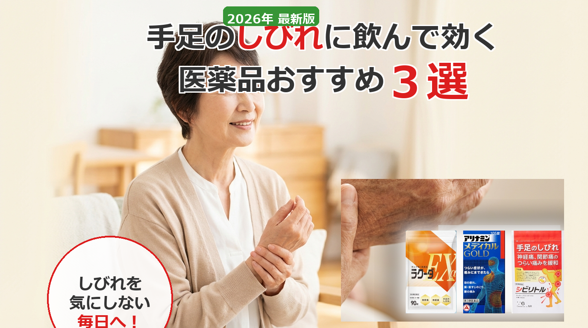
＼おすすめ医薬品3選を今すぐチェックする／
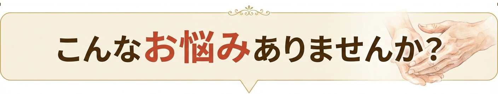
- 指先がしびれてボタンが掛けにくい
- 足のしびれでつまずくことが増えた
- 手足がじんじんして眠れない夜がある
- 病院で検査しても「異常なし」と言われた
- 処方された薬を飲んでも変わらない
- このまま悪化したらと思うと怖い
実は、60歳以上の約5人に1人が
手足のしびれに悩んでいます。
※出典：令和4年 国民生活基礎調査／厚生労働省
3つ以上当てはまったら、
早めの対策が必要です。
全部当てはまります…。病院を3つ回っても原因が分からなくて。
「異常なし＝原因なし」ではありません。原因が分かれば、しびれは改善できます。
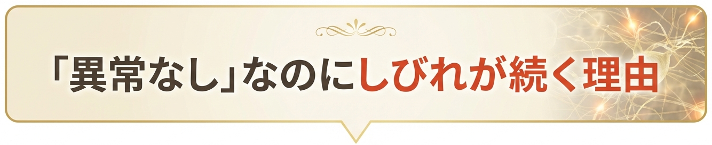
病院でMRIや血液検査を受けても「異常なし」。でも、しびれは続いている。
実はこれ、検査では見つからない「末梢神経」の問題です。
末梢神経が傷んでいる
手足の先まで張りめぐらされた
末梢神経は、
加齢や血行不良によって
少しずつ傷んでいきます。
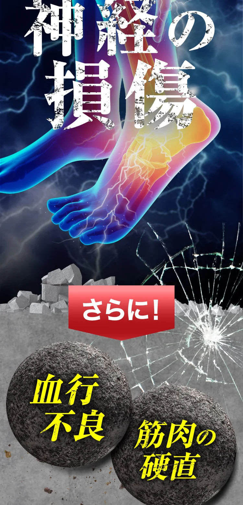
この傷みは、MRIやレントゲンには映りません。
だから「異常なし」と言われてしまうんです。
放っておくと、悪循環に
神経が傷むと、筋肉が硬くなる。
筋肉が硬くなると、血行が悪くなる。
血行が悪くなると、さらに神経が傷む。
この悪循環が、
しびれが止まらない
本当の原因です。
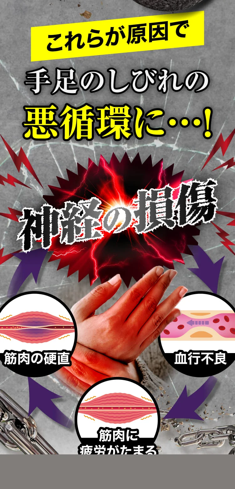
しびれを放置すると何が起こる？
この悪循環を放っておくと、
しびれは確実に悪化していきます。
最初は指先だけだったしびれが、
手のひら全体、足の裏へと広がり、
やがて…
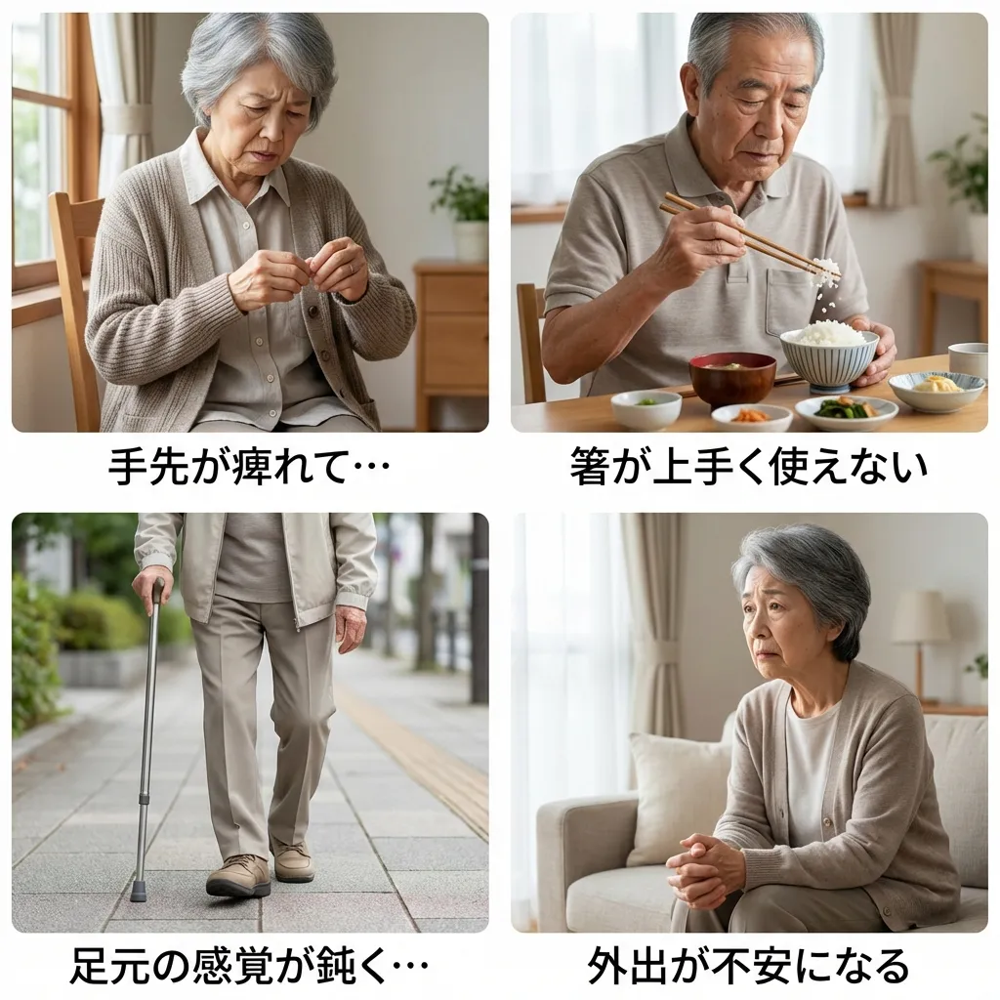
日常の「当たり前」が、
少しずつできなくなっていきます。
しびれは「今がピーク」ではありません。放置するほど、修復は難しくなります。早めのケアが何より大切です。
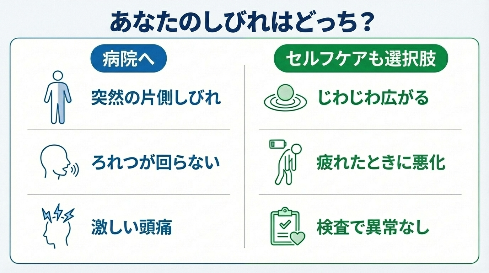
慢性的なしびれには、病院以外のケアも十分選択肢になります。
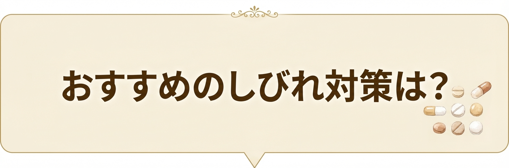
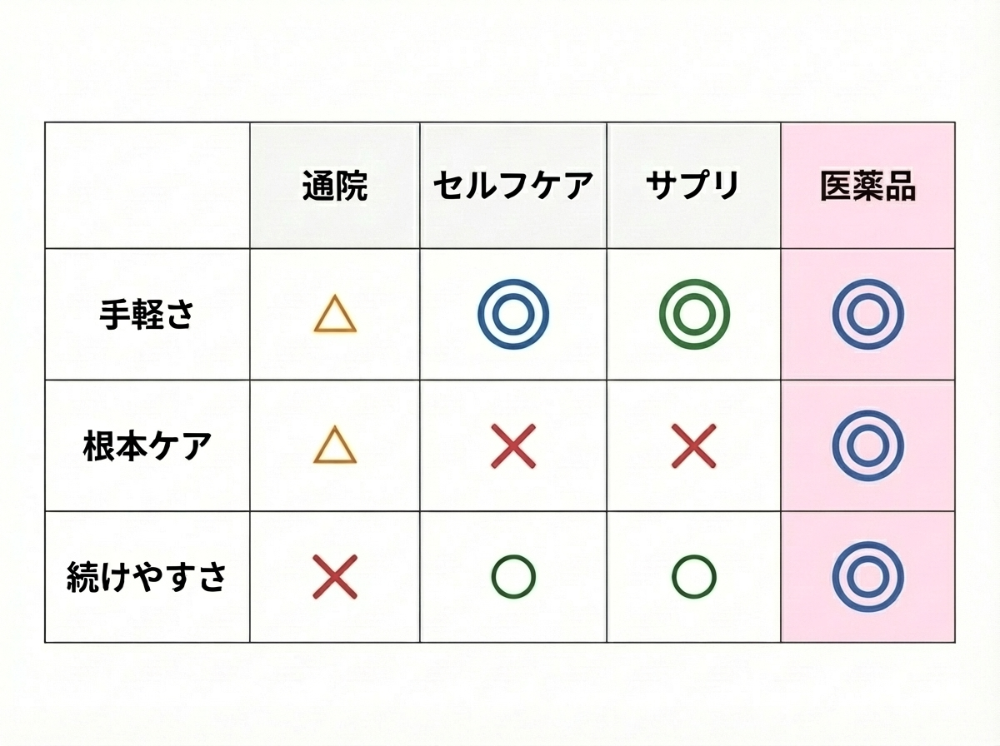
全部やりました…。整形外科も2つ行ったし、サプリも3種類試したけど、変わらなくて。
ここでポイントになるのが、
「サプリ」と「医薬品」の違いです。
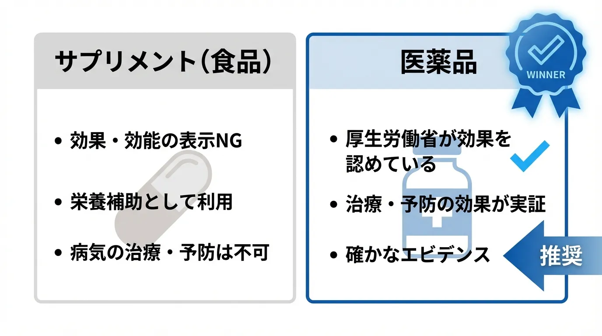
サプリメントはあくまで食品扱い。
しびれに効くとは言えません。
一方、医薬品は厚生労働省が
効果・効能を認めたものです。
しびれのような慢性的な悩みには、
「効果が認められた医薬品」で
対策するのが確実です。
サプリで変わらなかった方は、医薬品に切り替えることで効果を実感するケースも少なくありません。
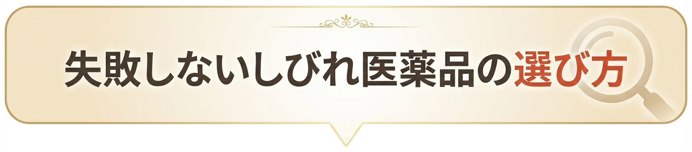
しびれ向けの市販薬は
いくつもありますが、
中身をよく見ると、
実は大きな違いがあります。
以下の3つを押さえておけば、
選び方で迷いません。
①しびれに効く成分が十分入っているか
末梢神経のケアで欠かせないのは、
傷んだ神経を修復する成分。
さらに、血流を改善する成分も
一緒に入っているものがおすすめ。
「修復」と「血流改善」。
この両方をしっかり
カバーできているかが、
市販薬選びの大きな分かれ目です。
②飲み続けやすいか
しびれの市販薬は、
最低でも1〜2ヶ月は続けないと
効果が分かりません。
ここで意外と大事なのが、
1日の服用回数。
1日3回の薬は、
昼の飲み忘れが起きやすく、
結局続かなくなる原因になります。
1日1回で済むかどうか。
地味ですが、ここで差がつきます。
③安心して始められるか
効果が期待できても、
始めるハードルが高ければ続きません。
以下の3つが揃っているかチェックしましょう。
- 初回がお試ししやすい価格か
- 返金保証がついているか
- 購入後に相談できる専門スタッフがいるか
ここまで揃っていれば、
迷わず試してみる価値があります。
この3つを満たす市販薬を、実際に比較してみました。
以上をふまえて、
しびれに効く医薬品
おすすめ3選を紹介します。

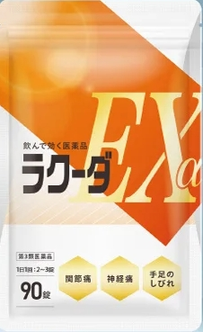 ラクーダEXα |
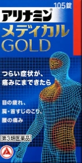 アリナミンMG |
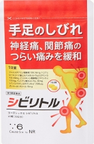 シビリトル |
| おすすめ度 | ||
| 有効成分数 | ||
7種 |
6種 |
6種 |
| 血流改善成分 | ||
あり |
なし |
なし |
| 1日の服用回数 | ||
1日1回 |
1日3回 |
1日1回 |
| 初回価格（30日分） | ||
1,980円 |
約4,714円 |
1,848円 |
| 返金保証 | ||
30日間 |
なし |
20日間 |
| 専門家サポート | ||
あり |
なし |
なし |
＼"修復＋血流改善"までカバーするのはコレ／
1位 ラクーダEXα★★★★★
- 血流改善成分ニコチン酸アミド配合
- しびれに効く有効成分7種配合の医薬品
- 1日1回、2〜3錠でOK
- 初回1,980円、定期のお約束なし
- 安心の30日間返金保証付き
- 登録販売者にいつでも相談できる
通常7,320円のラクーダEXαが、
公式サイト限定で初回72%OFFの1,980円。
1日あたり約66円。缶コーヒー1本より安い値段で始められます。
- 定期のお約束回数なし、いつでも解約OK
- 30日間の全額返金保証付き
返金保証があるなら、リスクなしで試せますね。
＼初回72%OFF・送料無料・返金保証付き／
しびれに効く7成分を
最大量配合
ラクーダEXαは、
しびれに効く7つの有効成分を、
認められた最大量まで配合しています。
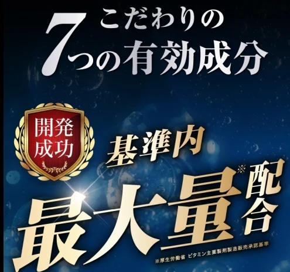
中途半端な量ではなく、
成分ごとの基準内上限まで配合してるので、
「神経修復」と「血流改善」の効果があります。
Point1：傷んだ末梢神経を修復する
しびれの原因は、
末梢神経のダメージ。
ラクーダEXαに含まれるビタミンB群が、
傷んだ神経を修復します。
ここまでは他の市販薬にもある働きですが、
ラクーダEXαの強みは血流改善にあります。
Point2：血流を改善して、修復を加速する
せっかく神経の修復成分を摂っても、
血流が悪ければ末梢のしびれ部分に届きません。
ラクーダEXαは、末梢の血流を改善する
ニコチン酸アミド配合で修復した神経に、
しっかり栄養を届けてくれます。
Point3：筋肉疲労を緩和する
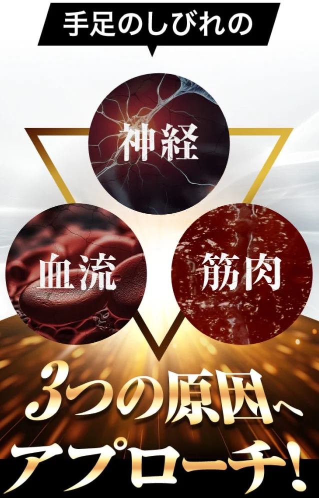
この「修復＋血流改善」の
Wアプローチに加えて筋肉の疲労を
緩和する効果もあります。
それぞれの成分を最大量で
叶えられるのが、
ラクーダEXαが効く理由です。
しびれの悪循環を断ち切るには、神経の修復だけでなく血流の改善も欠かせません。この両方に効くのがラクーダEXαの強みです。
しびれに特化した医薬品
ラクーダEXαは、
「手足のしびれ」が効能・効果に
正式に明記された第三類医薬品。
厚生労働省が認めた、
しびれ対策のための医薬品です。
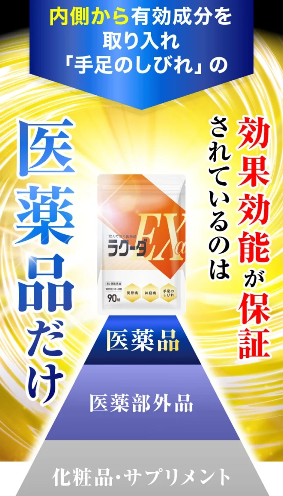
神経痛、関節痛、筋肉痛、
腰痛・肩こり、眼精疲労にも
効きますが、開発の出発点は
あくまで「しびれ」。
だからこそ、
7成分を最大量で組み合わせた
Wアプローチに
行き着いています。
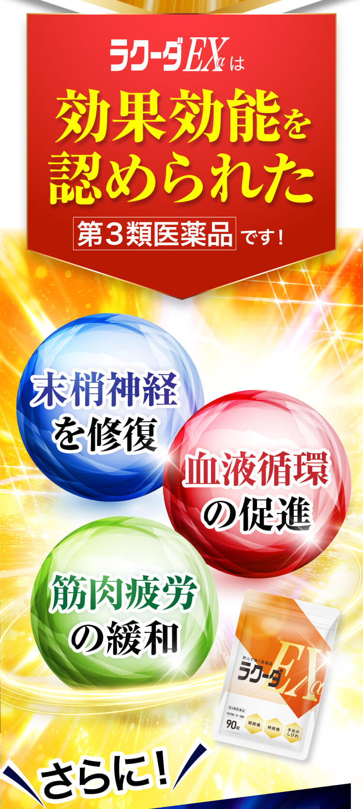
製造しているのは、
大正6年創業・100年を超える
老舗製薬会社。
さくらの森との共同開発で、
しびれに悩む人に届け続け、
累計1,400万袋を突破。
国内工場で一つひとつ
丁寧に作られています。
そして、しびれケアを
初めて試す方でも
安心して始められるよう、
登録販売者の資格を持つ
専門スタッフが
購入後も無料でサポート。
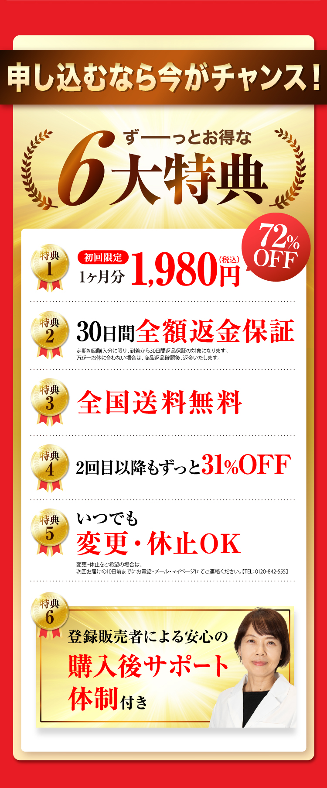
飲み合わせや体調の不安も気軽に相談できるので、しびれ対策が初めての方にも安心です。
実際に飲んだ方の声
64歳女性
3年前から指先のしびれが
ひどくなって、
ブラウスのボタンが
掛けられなくなりました。
病院を3つ回っても「異常なし」。
もうこのまま付き合っていくしかないのかと
半分諦めていました。
ラクーダEXαを飲み始めて
2ヶ月ほど経った朝、
いつものようにボタンに
手をかけたら、
スッと掛けられたんです。
たったそれだけのことなのに、
嬉しくて涙が出ました。
※個人の感想であり効能効果を保証するものではありません。
68歳男性
足の裏がじんじんして、
階段を降りるのが
怖くなっていました。
ビタミンBのサプリを
3種類試しましたが、
どれも変化を感じられなくて。
妻に「サプリじゃなくて
薬にしたら？」と言われて
ラクーダEXαを試してみました。
医薬品って大げさかなと
思ってたけど、飲み始めて
1ヶ月半くらいで足の裏の
じんじんが気にならない日が
出てきた。
サプリとは全然違うなと
実感しています。
※個人の感想であり効能効果を保証するものではありません。
61歳女性
以前は別のしびれ薬を
飲んでいましたが、
1日3回飲まないといけなくて、
お昼をしょっちゅう
忘れてしまって。
結局2週間で続かなくなりました。
ラクーダEXαは
1日1回、寝る前に飲むだけ。
これなら忘れようがないですよね。
気づいたらもう3ヶ月
続いています。
手のしびれも、
前よりずっと楽になりました。
※個人の感想であり効能効果を保証するものではありません。
72歳男性
足のしびれで何度かつまずいてから、
朝の散歩をやめてしまいました。
転んで骨折でもしたらと思うと
怖くて。外に出る回数も減って、
気分まで沈んでいました。
ラクーダEXαを始めて
2ヶ月くらいで足の感覚が
しっかりしてきた気がして、
近所を一周だけ歩いてみました。
今は毎朝30分、歩いています。
外の空気はやっぱり気持ちいいです。
※個人の感想であり効能効果を保証するものではありません。
どこで買うのが一番お得？
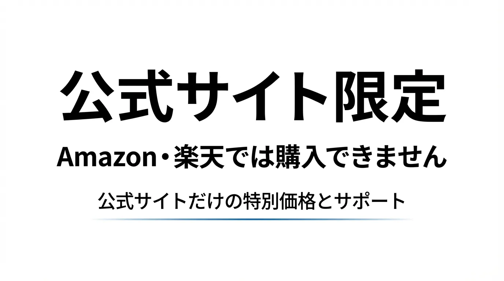
ラクーダEXαは
公式サイト限定の販売です。
ドラッグストアや通販サイトでは
購入できません。
だからこそ、公式サイトだけの
特別価格とサポートが
実現しています。
2回目以降はどうなる？
2回目以降は
31%OFFの4,990円。
1日あたり約166円です。
整形外科に通うと、
1回あたり2,000〜3,000円
かかることも。
月2回通えばそれだけで
4,000〜6,000円。
しかもラクーダEXαなら
通院の手間も待ち時間もありません。
それでも不安な方へ
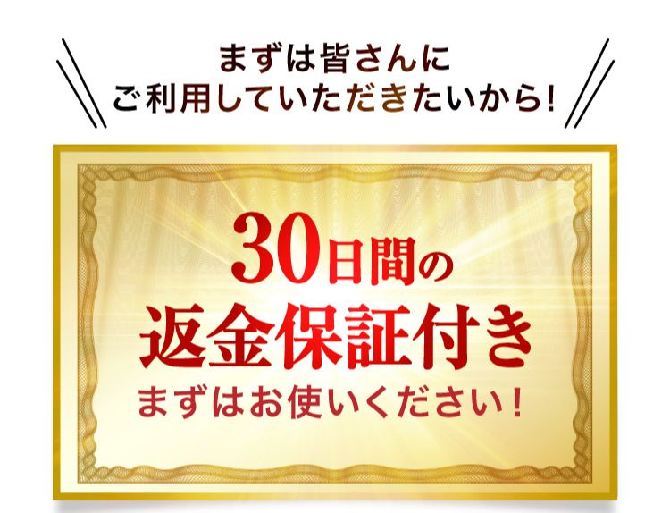
- 30日間の全額返金保証
届いて飲んでみて、合わなければ全額返金。開封済みでもOKです。 - 定期のお約束回数なし
解約はいつでもできます。 - 登録販売者に無料で相談できる
飲み方や体調の不安も、専門スタッフに何度でも相談できます。
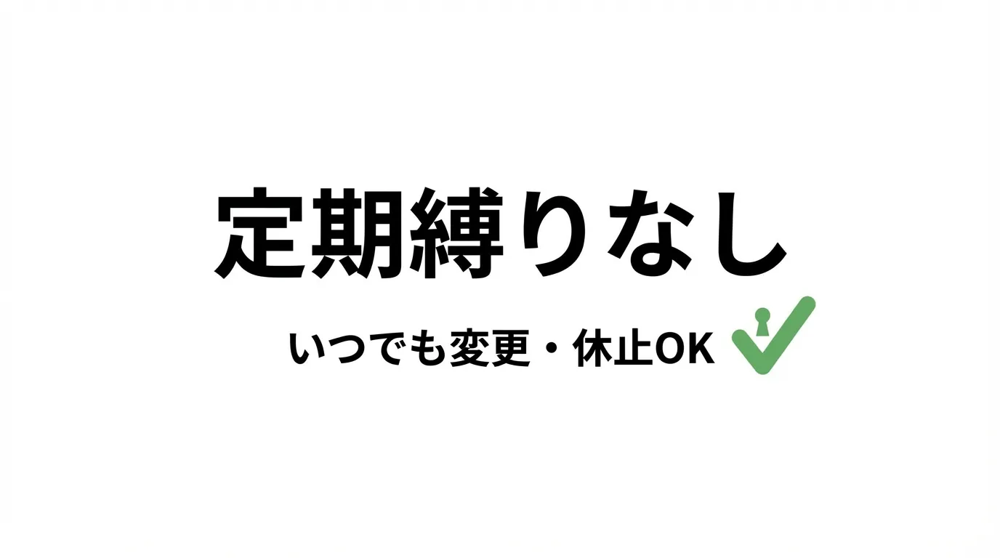
まずは初回1,980円で試してみて、合わなければ返金してもらえる。迷ってる理由がなくなりました。
＼定期縛りなし・いつでも解約OK／
キャンペーン在庫が残りわずかです
ラクーダEXαの
初回1,980円キャンペーンですが、
注文が殺到しており、
在庫が急速に減っています。
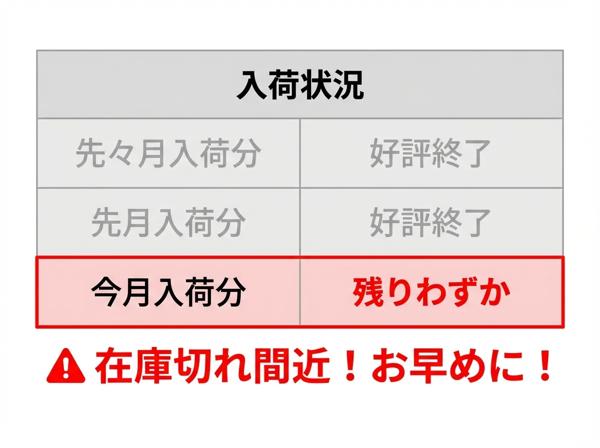
キャンペーンが終了すると、
通常価格7,320円でしか
購入できなくなり、
5,340円も多く払うことに
なります。
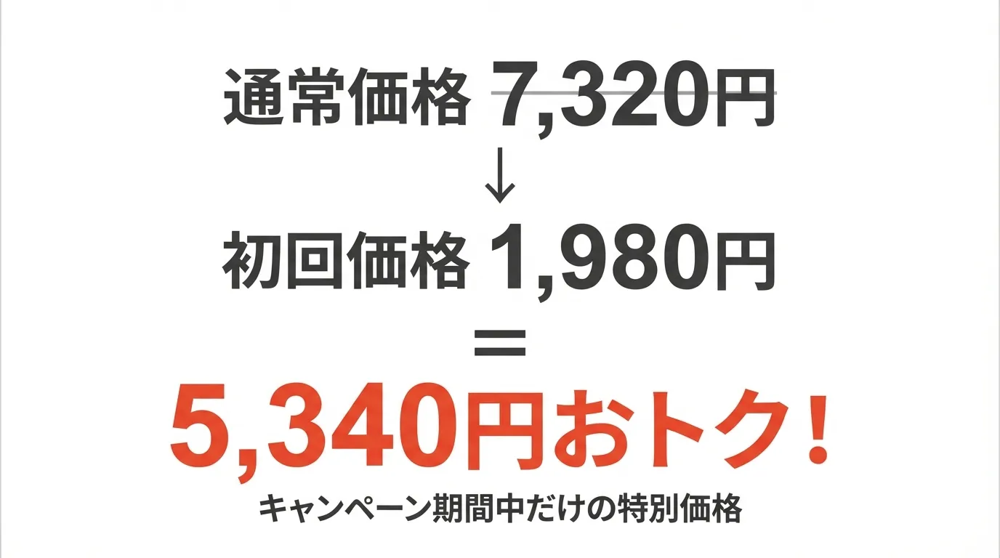
品切れになる前に、早めに確認しておいた方がよさそうです。
＼初回72%OFF・在庫残りわずか／
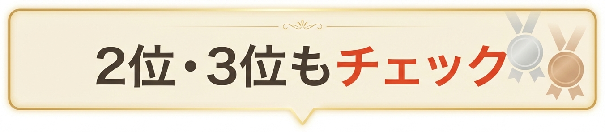
2位 アリナミンメディカルゴールド（105錠）
知名度抜群のアリナミンシリーズ。
有効成分6種で、
B6・B12が活性型なのは強み。
ただし、
1日3回の服用が必要で、
初回価格も約4,714円とやや高め。
返金保証もありません。
成分の質は高いので、
1日3回飲める方・
価格が気にならない方には選択肢。
65歳男性
手のしびれがつらくて、
知名度で選んでアリナミンを
買いました。
効いてる実感はあります。
ただ1日3回がなかなか大変で、
昼をよく飲み忘れてしまいます。
値段もそれなりにするので、
続けるかどうか迷っているところです。
※個人の感想であり効能効果を保証するものではありません。
3位 シビリトル
ラクーダEXαと
6成分が完全に同じ構成。
初回1,848円・1日1回と、
続けやすさも近い。
ただし、
血流改善成分（ニコチン酸アミド）が
入っておらず、
返金保証も20日間とやや短め。
専門家サポートもありません。
66歳女性
指先のしびれが気になって
始めました。
1ヶ月くらいで少し
和らいできた気がします。
1日1回でいいのは助かっています。
※個人の感想であり効能効果を保証するものではありません。
70歳男性
足のしびれ対策に
3ヶ月ほど飲みました。
少しマシになった気はしますが、
正直もう一歩という感じ。
あとから成分を見たら
血流改善の成分までは
入っていないと知り、
次はそこまでカバーしてくれる
医薬品を試そうかなと
思っています。
※個人の感想であり効能効果を保証するものではありません。
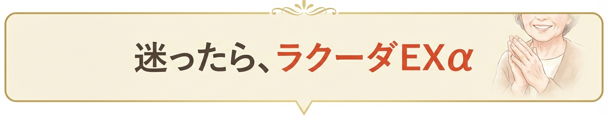
ここまで読んで、
「ちょっと試してみようかな」
と思ったなら、まずは1ヶ月。
初回1,980円、返金保証付き。
合わなければお金は戻ってきます。
朝起きたとき、指先の感覚がある。
ボタンにスッと手が届く。
つまずくのが怖くて止めていた散歩に、もう一度出かけられる。
そんな毎日を、取り戻してみませんか。
＼初回72%OFF・30日間返金保証付き／